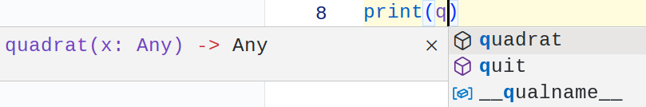

Prof. Dr.-Ing. Johannes Schildgen
johannes.schildgen@oth-regensburg.de
Programmieren 2 (Python)
Kapitel 1: Grundlagen


Vorlesung / Übung
Seminaristischer Unterricht
- Start: 16.10.2023
- Mo + Di, 11:45 Uhr in K223
- Livestream und Aufzeichnung auf YouTube
- Vorlesung mit integrierten Übungen
Übung
- In der Vorlesung erscheinen Übungsaufgaben
- Sie lösen die Aufgaben am CIP-Pool-Rechner
oder eigenem Laptop - Bei Fragen einfach fragen
- Leichte Aufgaben zum Einstieg ins Thema
+ komplexe Aufgaben - Countdown zum Lösen in der Präsenzveranstaltung, die restlichen Aufgaben lösen Sie zu Hause
- Jede Woche: Abgabe im ELO zum Punktesammeln
- Abgabe-Deadline: darauffolgender Montag 11:45 Uhr
Klausur
- Zulassungsvorraussetzung:
mind. 100 Punkte in der Übung
(es gibt 12 Abgaben mit
jeweils mind. 10 Punkten) - Schriftliche Klausur
- 90 Minuten Zeit
- Hilfsmittel: Handschriftlich
doppelseitig beschriebenes DIN-A4-Blatt
Literatur
- M. Kofler
Python - Der Grundkurs
Aufbau der Vorlesung
- Python-Grundlagen
- Datentypen, if/while/for/...
- Visual Studio Code, Jupyter Notebook
Aufbau der Vorlesung
- Python-Grundlagen
- Datentypen, if/while/for/...
- Visual Studio Code, Jupyter Notebook
- Datenstrukturen
- Listen, Tupel, Mengen, Dictionaries
Aufbau der Vorlesung
- Python-Grundlagen
- Datentypen, if/while/for/...
- Visual Studio Code, Jupyter Notebook
- Datenstrukturen
- Listen, Tupel, Mengen, Dictionaries
- Lambda-Ausdrücke
- Exceptions
Aufbau der Vorlesung
- Python-Grundlagen
- Datentypen, if/while/for/...
- Visual Studio Code, Jupyter Notebook
- Datenstrukturen
- Listen, Tupel, Mengen, Dictionaries
- Lambda-Ausdrücke
- Exceptions
- Objekt-orientierte Programmierung
- Klassen, Interfaces, Objekte
Aufbau der Vorlesung
- Python-Grundlagen
- Datentypen, if/while/for/...
- Visual Studio Code, Jupyter Notebook
- Datenstrukturen
- Listen, Tupel, Mengen, Dictionaries
- Lambda-Ausdrücke
- Exceptions
- Objekt-orientierte Programmierung
- Klassen, Interfaces, Objekte
- GUI-Programmierung
Warum Python?
Warum Python?
- Einfache Syntax
- Plattformunabhängig
- Kostenlos und Open Source
- Vielseitig einsetzbar:
- Konsolenprogramme
- Grafische Benutzeroberflächen
- Web-Anwendungen
- Datenanalyse
- KI / Machine Learning
- Scripting und Automatisierung
- ...
Python-Interpreter
Python-Programme werden von einem Interpreter ausgeführt.
Interaktiver Interpreter
$ python3
Python 3.10.10 (main, Mar 21 2023, 18:45:11) [GCC 11.2.0] on linux
Type "help", "copyright", "credits" or "license" for more information.
>>> 5+3
8Script-Interpreter
$ python3 meinprogramm.pyBeispiel-Programm
meinprogramm.py
Starten:
$ python3 meinprogramm.pyAusgabe:
Hallo!
8IDE
Integrated Development Enviroments
PyCharm, Thonny, Visual Studio Code, ...
- Kann viiiiel mehr als ein Texteditor
- Autovervollständigung
- Code-Generierung
- Versionsverwaltung
- Zeigt Warnungen und Fehler an
- Ausführung und Debugging des Programms
- ...
Visual Studio Code
Visual Studio Code
Nützliche Funktionen:
- Autovervollständigung beim Tippen
- Rechtsklick → Format Document
- Sauberes umbenennen:
Rechtsklick auf etwas → Rename Symbol - Oben rechts: Play Button zum direkten Ausführen ▷
- Eingebauter Debugger, Git-Integration, Unterstützung für Jupyter Notebooks, ...
Python-Dokumentation
Viele Beispiele, Beschreibungen von Bibliotheken, Funktionen, uvm.
Sprachelemente
| Bezeichnung | Beschreibung | Beispiel | Namenskonvention |
|---|---|---|---|
| Kommentar | wird ignoriert | # Einzeiler"""oder so""" | - |
| Variable & Attribut | speichert Wert oder Objektref. | x, name, aktuelleKarte | Beginnt mit Kleinbuchstaben |
| Klasse | "Bauplan" für Objekte | Person, QPushButton | Beginnt mit Großbuchstaben |
| Funktion | beschreibt Verhalten, kann Wert liefern | print, setText | Beginnt mit Kleinbuchstaben |
| Konstanten | unveränderlich | SPRACHE | Alles groß |
Variablen
Variablen speichern einen Wert eines (eingebauten) Datentypen.
Sie können aber auch noch vieles mehr speichern: die Referenz auf ein Objekt (Instanz einer benutzerdefinierten Klasse), eine Funktion, ein Modul, None, ...
An welchen Stellen ist hier Groß-/Kleinschreibung egal?
- ZAHLEN
- true
- Job
- none
https://fraage.de
Übung 1.1
- Installieren und öffnen Sie Visual Studio Code, legen Sie einen Ordner
uebung1an, in den Sie Ihre Python-Programme speichern werden. - Schreiben Sie ein Python-Programm, in dem Sie zwei Variablen verwenden:
laengeundbreite. Dies sind die Eigenschaften eines Rechtecks.
Schreiben Sie den Umfang und den Flächeninhalt jeweils zunächst in Variablen und geben Sie die Werte dann aus.
Konstanten
In anderen Programmiersprachen gibt es Konstanten, also Variablen, die nach ihrer Initialisierung nicht mehr verändert werden können.
In Python gibt es keine Konstanten!
ANZAHL_SPIELER = 3; ← den Wert sollte man nicht mehr verändern.
Was passiert, wenn man jetzt trotzdem ANZAHL_SPIELER = 3 macht?
- Kommt ein Fehler
- Der Wert bleibt trotzdem 2
- Der Wert wird auf 3 geändert
- Der Wert wird auf None gesetzt
https://fraage.de
Code-Einrückungen
Den Code einzurücken ist in Python wichtiger als in jeder anderen Programmiersprache! Einrückungen sind Teil der Syntax!
- Python verwendet Einrückungen, um Blöcke zu definieren.
- Tab oder beliebig viele Leerzeichen verwenden
- Empfehlung: 4 Leerzeichen, keine Tabs
- Blöcke bestimmen in Python nicht den Gültigkeitsbereich von Variablen. Variablen sind im gesamten Funktions- oder Modulbereich gültig, in dem sie definiert sind.
if / elif / else
Folgt nur ein Kommando, darf man das direkt in der gleichen Zeile direkt nach dem Doppelpunkt hinschreiben:
pass
pass macht gar nichts.
Man braucht es, wenn man in einem Code-Block nichts ausführen will.
Ohne das pass käme ein Fehler, weil nach if usw. ein Codeblock mit mindestens einem Statement erwartet wird.
Operatoren
Vergleichsoperatoren > >= < <= == !=
Logische Operatoren not / and / or
Conditional Expression
dann_wert if bedingung else sonst_wert
Die zweite Zeile des Beispiels entspricht dem Folgenden:
Was ist 1 if 2 > 3 else 4?
- 1
- 2
- 3
- 4
https://fraage.de
Schleifen: while / for
range(n) liefert Sequenz von Zahlen von $0$ bis $n-1$
break und continue
break bricht die Schleife sofort ab und springt hinaus.
continue überspringt den verbleibenden Teil der Schleife und prüft direkt wieder, ob noch eine Iteration gemacht werden soll.
0
1
2
3
4
0
1
2
3
4
6
7
8
9
Übung 1.2
Geben Sie alle ganzen Zahlen von 1 bis 100 wie folgt aus:
1
2
3
4
... ist teilbar durch 2
5
6
... ist teilbar durch 2
... ist teilbar durch 3
7
8
... ist teilbar durch 2
... ist teilbar durch 4
usw.Tipp: % ist der Modulo-Operator in Python: 10 % 2 = 0 (Rest bei Division)
Datentypen
bool | True oder False |
int | Ganze Zahl (positiv oder negativ, beliebig groß oder klein) |
float | Fließkommazahl (64 Bit) $\pm 1.8 \cdot 10^{308}$, float('inf')≙∞ |
complex | Komplexe Zahl, z. B. 1+2j |
str | Zeichenkette, z. B. 'hallo' oder "hi" |
list | Liste von Werten, z. B. ["Mo", "Di", "Mi"] |
tuple | Tupel, unveränderlich, z. B. (49.003674, 12.095089) |
dict | Dictionary (Menge v. Schlüssel/Wert-Paaren), z. B. {"a":1} |
set | Menge, ungeordnet, duplikatfrei, z. B. {7, 12, 15} |
NoneType | Nicht existierender Wert: None |
Strings
Strings stehen in einfachen oder doppelten Anführungszeichen
oder in Dreifach-Anführungszeichen (dann mehrzeilig möglich):
Strings können mit + konkateniert (aneinandergehangen) werden:
Strings
Strings sind immutable (unveränderlich). Sie lassen sich nicht an Ort und Stelle verändern, jede Operation erzeugt stattdessen einen neuen String.
Wie komme ich an das Wort "ist"?
- s[6:8]
- s[6:3]
- s[5:7]
- s[5:8]
https://fraage.de
Module / import
Pakete sind Sammlungen von Modulen (Funktionen, Klassen, Variablen, ...), sie können von Drittanbietern stammen oder selbst erstellt werden.
Importieren von Modulen
Viele Pakete sind in Python schon integriert. Weitere lassen sich z. B. mit dem Paketmanager pip installieren: (auf der Konsole eingeben)
$ pip3 install numpyKonsolenausgabe: print
printnimmt beliebig viele Argumente und gibt deren Werte auf der Konsole aus (Separator mit Parametersepeinstellbar; Standard:sep=' ').- Standardmäßig macht Python nach jeder Ausgabe einen Zeilenumbruch (
end="\n"), lässt sich mit dem Parameterend=""ausstellen.
Ausgabe formatieren
Es gibt mehrere Möglichkeiten, Strings mittels Platzhalter zu formatieren:
print kann natürlich auch direkt formatierte Strings ausgeben:
Platzhalter:
{0}, {1}, ...: über die Position%s(String),%d(Zahl),%.2f(Zahl gerundet auf 2 Nachkommastellen), ...{name}, {alter}: über den Variablennamen
Texteingabe: input
Wie heißt du? Anna
Hallo Anna!Typumwandlungen
Wenn man eine Zahl braucht, aber ein String vorliegt (oder andersum), müssen wir eine Typumwandlung vornehmen:
Übergibt man int(...) oder float(...) keine Zahl, kommt ein Fehler:
ValueError: invalid literal for int() with base 10: 'hallo'
Typermittlung: type(...)
Übung 1.3
Entwickeln Sie das folgende Spiel "Blackjack":
- Es wird eine zufällige Karte gezogen (Wert zwischen 2 und 11)
- Der Spieler muss entscheiden, ob er noch eine Karte ziehen möchte oder nicht.
- Wenn er/sie noch eine Karte ziehen möchte, wird eine weitere Karte gezogen und die Summe der Kartenwerte ausgegeben.
- Wenn er/sie keine Karte mehr ziehen möchte, wird die Summe der Kartenwerte ausgegeben.
- Wenn die Summe der Kartenwerte größer als 21 ist, hat der Spieler verloren.
- Wenn die Summe der Kartenwerte genau 21 ist, hat der Spieler gewonnen.
- Danach zieht der Computergegner seine Karten. Er zieht so lange noch eine Karte, wie die Summe kleiner als 17 ist.
- Wenn der Summe der Kartenwerte des Computergegners größer als 21 ist oder kleiner als die Kartenwerte des Spielers, hat der Spieler gewonnen. Bei Gleichstand gewinnt der Computergegner.
Funktionen: def f(x):
- Funktionen haben einen Namen und beliebig viele Parameter.
- Funktionen können mit
returneinen Wert zurückliefern. - Zuerst muss die Funktion definiert werden, dann kann man sie aufrufen.
Was wird bei hallo(quadrat(fuenf())) ausgegeben?
- Hallo 5!
- Hallo 25!
- Hallo fuenfundzwanzig()!
- das geht nicht
https://fraage.de
Lokale und globale Variablen
Variablen, die innerhalb einer Funktion definiert werden, sind nur innerhalb der Funktion sichtbar. Sie heißen lokale Variablen.
if __name__ == "__main__":
Es ist guter Programmierstil, wenn man die Haupt-Programmlogik in eine Funktion main() schreibt und diese am Ende des Scriptes nach Überprüfung vonif __name__ == "__main__": aufruft:
- (+) Modularität: Das Script kann in anderen Python-Scripten importiert werden. In dem Fall wird
main()nicht aufgerufen. - (+) Wiederverwendbarkeit: Funktionen aus dem Script lassen sich in anderen Scripten wiederverwenden.
- (+) Testbarkeit: Ein separates Script, welches einen Unit-Test macht, kann Funktionen aus diesem Script aufrufen und prüfen, ob sie das korrekte tun.
- (+) Lesbarkeit: Man sieht direkt, was beim Aufruf des Scripts gemacht wird.
import
Mit import lassen sich auch eigene Scripte importieren und deren Funktionen aufrufen. Das zu importierende Script muss sich im gleichen Ordner befinden.
Übung 1.4
Entwickeln Sie Funktionen:
- Eine Funktion
stars(password), die ein Passwort entgegennimmt und einen String der gleichen Länge, aber mit Sternchen ausgibt.
Beispielaufruf:stars("Hallo")liefert*****
Tipp: Die Funktionlen(s)gibt die Länge eines Stringsszurück.
- Eine Funktion
zinsen(anfangskapital, jahre, zinssatz), die das Endkapital nach der angegebenen Anzahl von Jahren berechnet.
Beispielaufruf:zinsen(500, 8, 3.75)liefert671.24
- In Python kann man einen String mit einer Zahl multiplizieren:
"hu"*2lieferthuhu. Entwickeln Sie mit diesem Wissen diestars-Funktion erneut. Nennen Sie siestars2
Kapitelzusammenfassung
- Die Programmiersprache Python
- Visual Studio Code
- Python-Dokumentation
- Variablen
- if, elif, else, while, for, break, continue
- Datentypen, Strings
- import
- Textausgabe und Texteingabe
- Funktionen
if __name__ == "__main__":